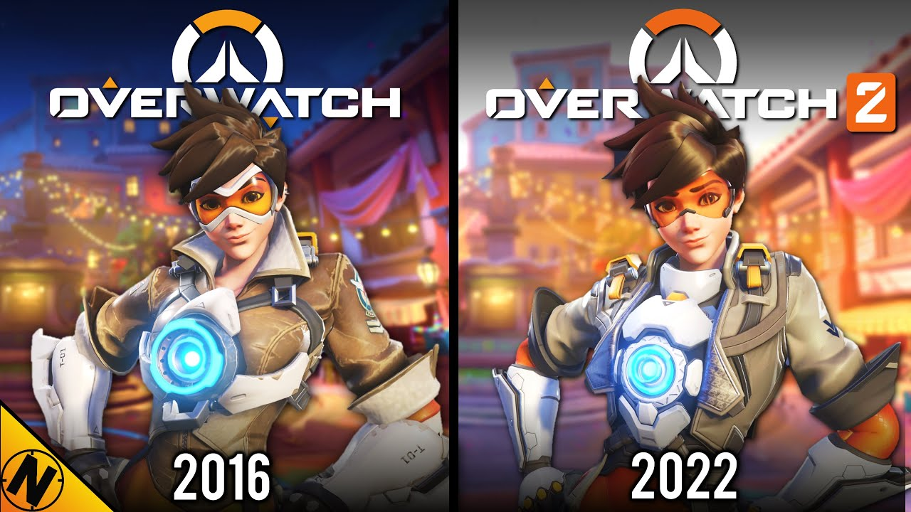

Hero Shooters
Hero shooters are a subgenre of multiplayer shooter video games that blend fast-paced combat with character-driven gameplay, where players choose from a roster of unique "heroes" or characters, each with distinct abilities, roles, and personalities. Unlike traditional shooters that focus solely on gunplay, hero shooters emphasize teamwork, strategy, and synergy between characters’ special skills, creating a dynamic mix of tactical depth and accessibility that sets them apart.
- Overwatch 1-2
- Marvel Rivals
Although, there are a lot of hero shooter games out there we here at LetsTalkGames have picked out two stand outs in the genre to review. We believe you guys the reader would love to know more about these two games as they are loved in the genre.
1. Overwatch 1-2
Overwatch, launched by Blizzard in 2016, is a vibrant hero shooter where two teams of six players pick from a colorful roster of characters—tanks, damage heroes, and supports—to battle over objectives like capturing points or pushing payloads. Its sequel, Overwatch 2, released in 2022 as a free-to-play evolution, shifts to five-player teams, adds a co-op PvE mode, and refines the formula with new heroes and maps while replacing the original on digital shelves. Both games shine with stunning visuals and a cast of heroes—like sharpshooter Widowmaker or healer Mercy—whose unique abilities make every match a wild mix of strategy and chaos. The fast-paced action and team synergy feel electric, whether you’re chaining ultimates in Overwatch 1’s polished 6v6 or adapting to Overwatch 2’s streamlined 5v5 flow. The original’s loot box grind and Overwatch 2’s battle pass system can feel stingy, locking cool skins behind paywalls or long hauls that frustrate casual players. Balance woes plague both—some heroes dominate while others languish—and Overwatch 2’s promised PvE story mode still feels half-baked, disappointing fans who loved the lore.
For anyone looking to download Overwatch 2 you can find it on the Xbox or Playstation games stores. For those of you on pc you can download it here: Overwatch 2
2. Marvel Rivals

Marvel Rivals, released by NetEase in December 2024, is a free-to-play hero shooter where two teams of six players pick from a roster of Marvel heroes and villains to fight over objectives like escorting payloads or capturing points. With its vibrant third-person action and comic-book flair, it blends familiar gameplay from titles like Overwatch with destructible environments and team-up abilities unique to the Marvel universe. The game bursts with personality—heroes like Spider-Man and Iron Man feel true to their roots, with flashy abilities and witty voice lines that make every match a superhero spectacle. The destructible maps and team-up skills (like Rocket riding Groot) add a chaotic, strategic twist, keeping battles fresh and thrilling. Balance is a mess—some heroes dominate while others feel weak, and the oversized roster leads to cluttered, hard-to-read fights that confuse newbies. The monetization pushes pricey skins hard, and the lack of a role queue or deeper story mode leaves it feeling shallow beyond the initial fun.
For anyone looking to download Marvel Rivals you can find it on the Xbox or Playstation games stores. For those of you on pc you can download it here: Marvel Rivals